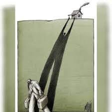

Dans la série "Les vents contraires"
N°20. L'exil et la terre natale
Terre natale, tu fais vibrer mes racines,
mais tes contours s’effacent dans le brouillard des jours.
Je marche sur tes routes, parfois à contre-courant,
perdu dans le souffle lourd des souvenirs qui pèsent.
Entre rires et larmes, je danse avec mes fantômes,
l’âme en chantier, cherchant un sens à mes errances.
Chaque pierre de ton sol me parle en silence,
murmure doux-amer qui me rend nostalgique.
Exilé volontaire, philosophe dérouté,
je porte ton poids et ta lumière vacillante.
Tu es ce paradoxe, ce feu et cette glace.
Je reviens toujours, même si le voyage lasse,
car au fond de mon cœur, ta voix me hante —
terre natale, amour fou, douce menace.
Djamel Metref
At Yenni le 25 août 2025

← Tous les poèmes